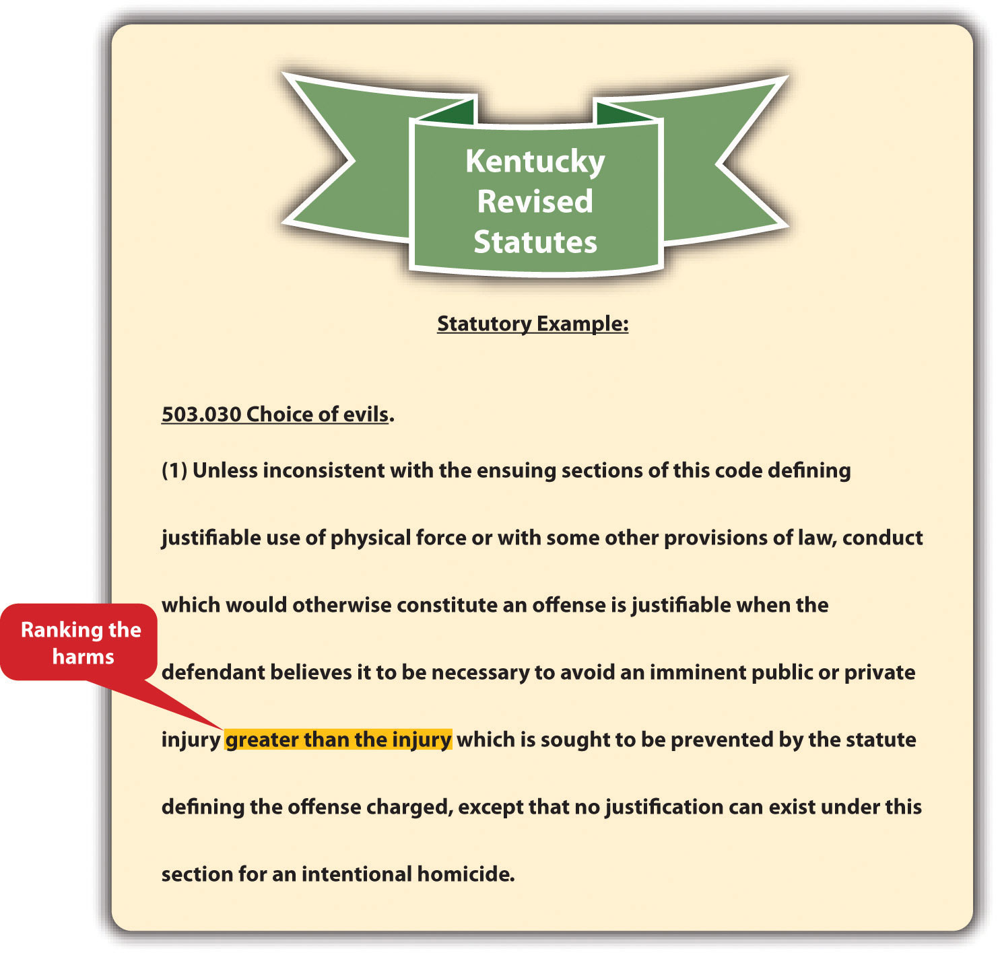

Occasionally, the law protects a defendant from criminal responsibility when the defendant has no choice but to commit the crime. In this section, we review the choice of evils and duress defenses.
The choice of evils defenseA defense that allows a defendant to choose to commit a crime to avoid a greater, imminent harm. This defense is called the necessity defense in some jurisdictions. (called the necessity defense in some jurisdictions) protects a defendant from criminal responsibility when the defendant commits a crime to avoid a greater, imminent harm. Under the Model Penal Code, “[c]onduct which the actor believes to be necessary to avoid harm or evil…is justifiable, provided that: (a) the harm or evil sought to be avoided by such conduct is greater than that sought to be prevented by the law defining the offense charged” (Model Penal Code § 3.02(1)(a)). The choice of evils defense can be statutory or common-law, perfect or imperfect, depending on the jurisdiction.
The choice of evils defense generally requires three elements. First, there must be more than one harm that will occur under the circumstances. Usually, the harms are the product of nature, or are circumstances beyond the defendant’s control.State v. Holmes, 129 Ohio Misc. 2d 38 (2004), accessed November 22, 2010, http://www.sconet.state.oh.us/rod/docs/pdf/98/2004/2004-ohio-7334.pdf. Second, the harms must be ranked, with one of the harms ranked more severe than the other. The ranking is generally up to the legislature or common law. In many jurisdictions, the loss of life is never justifiable under this defense and cannot be ranked lower than any other harm.Ky. Rev. Stat. Ann. § 503.030, accessed November 22, 2010, http://www.lrc.ky.gov/krs/503-00/030.PDF. Third, the defendant must have an objectively reasonable belief that the greater harm is imminent and can only be avoided by committing the crime that results in the lesser harm.Tenn. Code Ann. § 39-11-609, accessed November 22, 2010, http://www.michie.com/tennessee/lpext.dll?f=templates&fn=main-h.htm&cp=tncode.
Figure 5.6 Kentucky Revised Statutes
The choice of evils defense is rarely used and is generally only a defense to the loss or destruction of property. When the defense is perfect, it results in an acquittal. When the defense is imperfect, it results in a reduction in sentence or the defendant’s conviction of a lesser offense.
Tamara gets lost while hiking in a remote, mountainous area. After wandering around for hours with the temperature dropping, Tamara finds a locked cabin. Tamara breaks a window and climbs inside. Once inside, Tamara prepares some canned chili, drinks tap water, and uses the telephone to call law enforcement. Tamara could probably plead and prove choice of evils as a defense to burglary and theft in many jurisdictions. Tamara was confronted with two harms: harm to her personal safety and well-being and harm to the real and personal property of another. The harm to Tamara’s health and safety is ranked more severe than the minimal harm to property. It is objectively reasonable to break into and enter a cabin and use some of the supplies inside to prevent imminent injury or death. Thus although Tamara committed burglary and theft in many jurisdictions, she did so with the reasonable belief that she was saving her own life. A trier of fact could find that the harm avoided by Tamara’s actions was greater than the harm caused by the burglary and theft, and Tamara could be acquitted, or have her sentence or crime reduced, depending on the jurisdiction.
Change the facts in the preceding example, and imagine that Tamara steals money and jewelry in addition to the chili and tap water. Tamara could not successfully prove the defense of choice of evils to this additional theft. No harm was avoided by Tamara’s theft of the money and jewelry. Thus choice of evils cannot justify this crime.
Change the facts in the preceding example, and imagine that Tamara kills the cabin’s owner because he refuses to allow her to enter. Tamara could not successfully prove the defense of choice of evils under these circumstances. Tamara’s life is no more important than the cabin owner’s. Thus Tamara cannot rank the harms, and choice of evils cannot justify criminal homicide in this case.
In some jurisdictions, the choice of evils defense is called the duressA defense that allows a defendant to choose to commit a crime when faced with an imminent and objectively reasonable threat of serious bodily injury or death. defense if the choice of evils is deliberately brought on by another individual, rather than by nature, an act of God, or circumstances outside the defendant’s control. The Model Penal Code defines the duress defense as “an affirmative defense that the actor engaged in the conduct…because he was coerced to do so by the use of, or a threat to use, unlawful force against his person or the person of another” (Model Penal Code § 2.09(1)).
Three elements are required for the duress defense. First, the defendant or another person must face a threat of imminent serious bodily injury or death.Conn. Gen. Stat. § 53a-14, accessed November 22, 2010, http://search.cga.state.ct.us/dtsearch_pub_statutes.html. Second, the defendant must have an objectively reasonable belief that the only way to avoid the serious bodily injury or death is to commit the crime at issue.Haw. Rev. Stat. § 702-231, accessed November 22, 2010, http://codes.lp.findlaw.com/histatutes/5/37/702/702-231. Third, in most jurisdictions, the crime committed cannot be criminal homicide.RCW 9A.16.060, accessed November 22, 2010, http://apps.leg.wa.gov/rcw/default.aspx?cite=9A.16&full=true#9A.16.060. Like choice of evils, the duress defense is rarely used and can be statutory or common law, perfect or imperfect, depending on the jurisdiction.
Keisha, a bank teller, hands Brian, a bank robber, money out of her drawer after he points a loaded gun at her head. Technically, Keisha embezzled the money from the bank, but she did so based on the objectively reasonable fear that Brian would kill her if she failed to comply with his demands. Keisha can successfully claim duress as a defense to any charge of theft. If Brian had pointed the gun at another client in line at the bank instead of Keisha, Keisha could still prevail using the duress defense because duress also applies when the threat of death or serious bodily injury is to another person.
Change the example with Keisha and Brian, and imagine that Brian’s threat is made in a phone call, rather than in person. Brian threatens to kill Keisha if she doesn’t place thousands of dollars in an envelope and mail it to him at a specified address. If Keisha complies, Keisha cannot prove duress as a defense to theft. Brian’s threat by phone call is not a threat of imminent death. In addition, it is not objectively reasonable to be frightened by a voice on the telephone. Keisha could hang up the phone and contact law enforcement, instead of timidly complying with Brian’s demands.
Change the preceding example with Keisha and Brian, and imagine that Brian orders Keisha to kill his ex-wife Pat, who works at the station next to Keisha. Brian thereafter hands Keisha a switchblade. Keisha cannot kill Pat and claim duress as a defense to murder in most states. Keisha’s life is no more valuable than Pat’s. Therefore, Keisha cannot legally choose to commit the crime of murder and justify the crime with the duress defense.
Answer the following questions. Check your answers using the answer key at the end of the chapter.